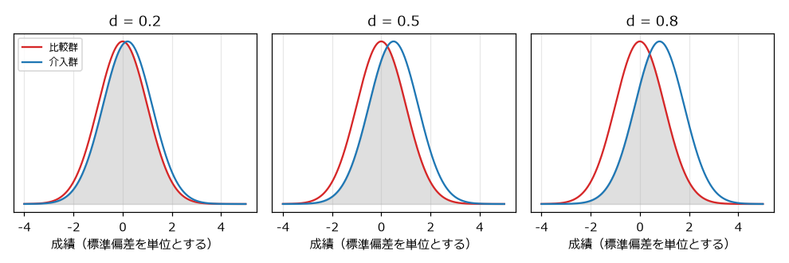

15. 学習科学の情報の読み方
本書では、学習法や主張ごとにエビデンスの強さを示してきた。しかし、学習に関する情報は本書の外にもあふれており、その中には根拠の確かなものも、根拠のない俗説も含まれている。本章では、学習に関する情報の確からしさを自分で判断するための基礎知識として、研究の種類、効果量、再現性の問題、実験室と現実の差を説明し、俗説の見分け方と情報源の調べ方を紹介する。
15.1. 研究の種類
学習の研究には、さまざまな種類がある。研究の種類によって、そこから言えることが異なる。
種類 |
内容 |
言えること・注意点 |
|---|---|---|
実験研究 |
参加者を条件（例：検索練習をする群と、再読をする群）にランダムに割り当て、結果を比べる。 |
条件の違いが結果の違いを生んだ（因果関係）と言いやすい。ただし、実験の状況が現実と異なることがある。 |
相関研究 |
2 つの事柄の関係（例：睡眠時間と成績）を、操作せずに調べる。 |
関係があることは言えるが、どちらが原因か、あるいは第 3 の要因が両方に影響しているのかは分からない。 |
事例研究 |
特定の人や集団を詳しく調べる。 |
仮説を生むのに役立つが、結果を一般化するのは難しい。 |
メタ分析 |
同じ問いを調べた多くの研究の結果を、統計的にまとめる。 |
1 つの研究より確かな結論を得やすい。ただし、元の研究の質や、公表されなかった研究の問題の影響を受ける。 |
15.1.1. 相関と因果
学習に関する情報で特に注意すべきなのは、相関関係を因果関係と取り違えることである。例えば「朝食を毎日食べる生徒は成績がよい」という調査結果があったとしても、それだけでは「朝食を食べると成績が上がる」とは言えない。規則正しい生活を送る家庭の生徒は、朝食も食べ、勉強の習慣もある、というように、別の要因が両方に影響している可能性があるからである。
因果関係を確かめるには、実験研究が必要である。学習法の効果について調べるときは、その主張が実験研究に基づいているかを確かめるとよい。
15.1.2. メタ分析とレビュー
1 つの研究の結果は、参加者や状況の偶然によって左右されることがある。多くの研究の結果をまとめたメタ分析や、専門家が研究を体系的に整理したレビューは、より確かな手がかりになる。本書でも、Dunlosky ら（2013）のレビューや、多くのメタ分析を根拠にしている。
15.2. 効果量の読み方
研究の結果を読むときは、「効果があるかどうか」だけでなく、「効果がどのくらい大きいか」を知ることが重要である。効果の大きさを表す指標を効果量と呼ぶ。
15.2.1. 標準化された平均値の差
学習の研究でよく使われる効果量に、Cohen の \(d\) がある。2 つの群（例えば、新しい学習法を使った介入群と、従来の方法を使った比較群）の成績の平均値の差を、成績のばらつき（標準偏差）で割ったものである。
ここで \(M_1\) と \(M_2\) はそれぞれの群の平均値、\(s_p\) は 2 つの群をまとめた標準偏差（プールされた標準偏差）である。\(s_p\) は、それぞれの群の標準偏差 \(s_1\)、\(s_2\) と人数 \(n_1\)、\(n_2\) から、以下のように計算する。
例えば、介入群の平均点が 75 点、比較群の平均点が 70 点で、標準偏差が 10 点なら、\(d = (75 - 70) / 10 = 0.5\) である。効果量を使うと、点数の単位や満点が異なる研究どうしでも、効果の大きさを比べられる。
15.2.2. 効果量の目安
Cohen（1988）は、\(d\) の大きさの目安として、0.2 を小さい効果、0.5 を中程度の効果、0.8 を大きい効果とした。図 15.1 は、それぞれの効果量のときの、2 つの群の成績の分布を示したものである。


図 15.1 効果量 \(d\) と 2 つの群の成績の分布（灰色は重なっている部分）
成績が正規分布に従うと仮定すると、\(d = 0.5\) のとき、介入群の平均点は比較群の約 69 % の人より高い位置にある。\(d = 0.2\) なら約 58 %、\(d = 0.8\) なら約 79 % である。\(d = 0.8\) の「大きい効果」でも、2 つの群の分布はかなり重なっている。つまり、効果の大きな学習法でも、比較群の中には介入群の多くの人より成績のよい人がいる。効果は平均の話であり、個人の結果を保証するものではない。
15.2.3. 効果量の解釈の注意点
Cohen の目安は、もともと心理学の研究全般に向けたおおまかなものであり、Cohen 自身も、分野ごとに解釈すべきだと述べている。Kraft（2020）は、学校での教育の介入を実際に評価した研究では、効果量は一般に小さく、Cohen の目安で「小さい」とされる 0.2 程度でも、教育の介入としては大きい効果と考えるべきだと論じている。
また、効果量は、研究の条件によって大きく変わる。
実験室での短期間の研究は、現実の場面での研究より、効果量が大きくなりやすい。
研究者が作ったテストで測った効果は、標準化された試験で測った効果より大きくなりやすい。
少人数の研究は、偶然に大きな効果量が出やすい。
効果量を比べるときは、研究の条件が似ているかを確かめる必要がある。
15.3. 再現性の問題
科学の結果は、同じ方法で研究をやり直したとき（追試）に、同じ結果が得られるべきである。これを再現性と呼ぶ。2010 年代に、心理学を中心に、有名な研究の多くが追試で再現されないことが明らかになり、「再現性の危機」と呼ばれた。
Open Science Collaboration（2015）は、心理学の主要な学術誌に掲載された 100 の研究の追試を行った。元の研究の 97 % が統計的に有意な結果を報告していたのに対し、追試で有意な結果が得られたのは 36 % にとどまった。追試での効果量の平均は、元の研究の半分程度であった。
15.3.1. 再現されない原因
再現されない研究が生まれる主な原因として、以下が指摘されている。
出版バイアス：効果が見つかった研究は学術誌に掲載されやすく、効果が見つからなかった研究は掲載されにくい。その結果、公表されている研究だけを見ると、効果が実際より大きく見える。
研究者の分析の自由度：データの分析方法（どの参加者を除くか、どの指標を使うか、いつデータの収集をやめるか）を、結果を見ながら選ぶと、実際には効果がなくても、偶然に有意な結果が得られやすくなる（Simmons ら, 2011）。
少人数の研究：参加者が少ない研究は、偶然の影響を受けやすく、誤った結論に至りやすい（Ioannidis, 2005）。
15.3.2. 本書との関係
本書で取り上げた研究の中にも、追試で効果が小さくなったり、再現されなかったりしたものがある。手書きのノート（第 7 章）、マインドセット（第 10 章）、スマートフォンの存在（第 11 章）はその例である。一方で、検索練習や分散学習（第 5 章）は、数百の研究で繰り返し確かめられており、再現性の問題の影響を受けにくい。本書のエビデンスの強さの表示は、このような再現の状況も考慮している。
再現性の危機を受けて、研究の計画を事前に登録する（事前登録）、データを公開する、といった取り組みが広がっている。最近の研究を読むときは、事前登録されているか、大規模な追試で確かめられているかも、確からしさの手がかりになる。
15.4. 実験室の結果と現実の学習の差
学習の研究の多くは、実験室で、短い時間で、大学生を対象に行われている。その結果を、自分の独学に当てはめるときは、以下の違いに注意する。
観点 |
実験室の研究 |
独学 |
|---|---|---|
対象者 |
大学生が多い。 |
年齢、経歴、既有知識がさまざまである。 |
教材 |
単語の組、短い説明文など、単純な材料が多い。 |
書籍 1 冊、分野全体など、複雑で量が多い。 |
期間 |
数分から数週間。 |
数か月から数年。 |
動機づけ |
実験への参加として学習する。 |
自分の目的のために学習する。続けるかどうかも自分で決める。 |
測定 |
研究者が作ったテストで測る。 |
実際にできるようになったかで判断する。 |
このような違いがあるため、実験室で効果が確かめられた方法が、そのまま独学で同じ効果を発揮するとは限らない。逆に、実験室では効果が小さく見える方法でも、長期間続ければ大きな差になることもある。
ただし、検索練習や分散学習のように、実験室だけでなく、教室や現実の学習の場面でも効果が確かめられている方法は、独学でも効果が期待できる。本書のエビデンスの強さで「強い」とした方法の多くは、このような方法である。
自分の学習に当てはめるときは、研究の結果を「試してみる価値のある仮説」として扱い、第 9 章の振り返りで、実際に自分に効果があるかを確かめるのがよい。
15.5. 俗説の見分け方
学習に関する主張に出会ったとき、その確からしさを判断するためのチェックリストを以下に示す。
確認すること |
注意すべき兆候 |
|---|---|
根拠が示されているか |
根拠がない。「研究によると」とだけ書かれ、具体的な研究が示されていない。 |
根拠は何か |
個人の体験談や、少数の成功例だけが根拠になっている。 |
元の研究と一致しているか |
引用されている研究を確かめると、主張と異なる内容が書かれている。研究の結果が誇張されている。 |
研究の種類は何か |
相関研究の結果から、因果関係を主張している。 |
効果の大きさは示されているか |
「効果がある」とだけ言い、どのくらいの効果かが示されていない。 |
再現されているか |
1 つの研究だけに基づいている。追試で再現されていない。 |
単純すぎないか |
「これだけで成績が劇的に上がる」「誰でも」「必ず」といった言葉が使われている。 |
利害関係はないか |
主張している人が、関連する商品やサービスを販売している。 |
数値が不自然でないか |
ラーニングピラミッド（第 4 章）のように、数値がきれいに並びすぎている。 |
すべての項目を満たす情報はまれであり、1 つの兆候があるだけで誤りとは限らない。しかし、多くの兆候が当てはまる主張は、慎重に扱うべきである。
15.6. 情報源の調べ方
学習に関する主張の根拠を自分で確かめたいときは、以下の情報源を使う。
15.6.1. 論文の検索
Google Scholar：学術論文を幅広く検索できる。論文が何回引用されているかも分かる。
ERIC：アメリカ教育省が運営する、教育研究の論文のデータベース。無料で全文を読める論文も多い。
PubMed：医学・生命科学の論文のデータベース。睡眠や運動と脳の関係などを調べるのに向いている。
論文を探すときは、個別の研究よりも先に、レビュー論文やメタ分析を探すとよい。検索語に「review」や「meta-analysis」を加えると見つけやすい。
15.6.2. 論文の読み方
専門家でなければ、論文を最初から最後まで読む必要はない。以下の順に読むと、要点をつかみやすい。
要旨（Abstract）：研究の目的、方法、結果、結論が短くまとめられている。
図と表：主な結果が示されている。
考察（Discussion）の最初と最後：結果の解釈と、研究の限界が書かれている。
方法（Method）：参加者の人数と属性、実験の手順を確かめる。
研究の限界（Limitations）の記述には、その研究から言えないことが書かれているので、特に注意して読むとよい。
15.6.3. プレプリントの扱い
プレプリントとは、学術誌の査読（専門家による審査）を受ける前に公開された論文である。心理学の分野では、PsyArXiv などのサーバーで公開されている。新しい研究の結果をいち早く知ることができる一方、査読を経ていないので、誤りが含まれている可能性が通常の論文より高い。プレプリントの結果は、査読を経た論文の結果より慎重に扱う。
15.7. この章のまとめ
実験研究は因果関係を、相関研究は関係の有無を示す。相関を因果と取り違えない。
1 つの研究より、メタ分析やレビューのほうが確かな手がかりになる。
効果量は効果の大きさを示す。大きい効果でも、2 つの群の分布はかなり重なる。効果は平均の話である。
心理学の研究の中には、追試で再現されないものがある。検索練習や分散学習は繰り返し確かめられている。
実験室の研究と独学には違いがある。研究の結果は試す価値のある仮説として扱い、自分で効果を確かめる。
学習に関する主張は、根拠、研究の種類、効果の大きさ、再現性、利害関係などを確認して判断する。
15.8. やってみよう
最近目にした学習に関する主張（書籍、ウェブ記事、動画など）を 1 つ選び、本章のチェックリストで確認する。
本書で取り上げた研究の中から 1 つを選び、参考文献のリンクから論文の要旨を読む。本書の説明と要旨の内容が一致しているかを確かめる。
自分が使っている学習法を 1 つ選び、Google Scholar でその学習法のレビュー論文やメタ分析を探す。